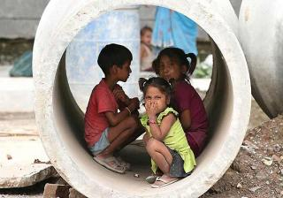
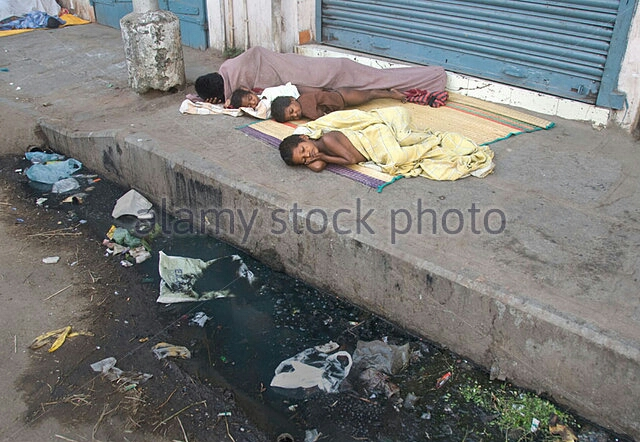
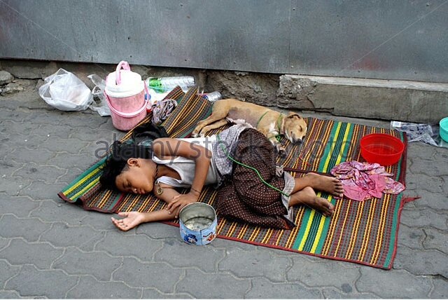
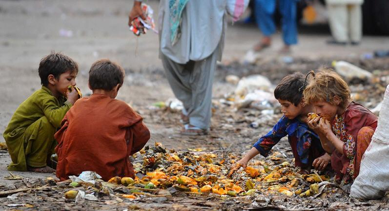
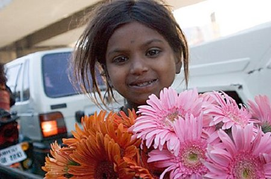
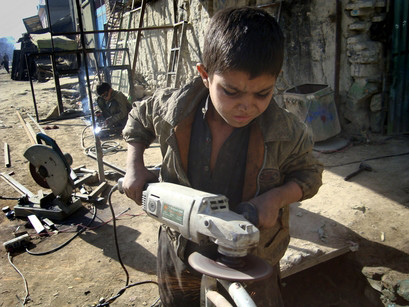
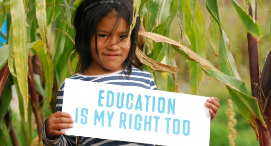

Street children are minors who live and survive on the streets
Let's know about them

Streetchildren often grow up in public landfills,train stations or under the bridges of the world's major cities. Because of conflicts with their family, these children don't want to or can;t return home.
Most of these children are born in proverty. And many of them are orphans or have lost their family. All these situations make them to be recognized as "Street Children".
Let's see how and where they live


Roadsides are their ideal places to reside and even sleep. They do not care for whether the place is dirty or not. Sometimes they are seen sleeping beside street animals.
Let's see what they eat

As they are stuck to poverty, they hardly can manage theirs meals. Often they have to remain starving the whole day. But when they can't resist, they have no other choice without collecting foods from the dustbin. These pathetic scene is very common in their lives.
Let's see how they earn


As the street children have no gurdians, they have to earn their livelihood themselves by hook or by crook. So they do jobs in tea stalls, collect rubbish, sell flowers, sell newspapers, do job as a cobbler or a car washer, do job in the garages etc. Sometimes they do very difficult and risky jobs to earn more. This types of job may injure them badly.
Sometimes some of the street children engaged themselves to crime in want of money. This often leads them to commit any kind of sin.
As they get no opportunity to admit themselves in schools, they do not get education and learn the moral values. They might be the assets of the country if they could get education. though they have this fundamental right, unfortunately they do not have that ability.

We are living in the society happily. But we never give attention to this issue. We don't think about the helpless children. Where we have various types of dresses to wear, they have only one ordinary dress. Where we can afford our lunch or dinner at luxarious restaurants, they have to find their meals from streets or dustbins. Where we have our comfortable home to live in and sleep, they have nothing.
Whethere there is unbearable heat of the sun or heavy rain or bitter cold, they have no way to protect themselves.
Without helping these little helpless human beings, we are neglecting them. We never think that we would also have been born in poverty, we could have been living with them on the streets. Rather we show hatred towards them.
It is high time we changed our mentality.
There are many organizations which are offering helps to the street children. "Unicef" is one of them. It is one of the section of THE UNITED NATIONS. They are doing a great job to help the street children of the world.
There are also some helping organizations for the street children in our country too. Such as-
We need to remember that the street children are also human like us. We must not neglect them or behave rudely with them. Rather we should try to be their best friends. They need our help, they need our support, they need their fundamental rights including education.
We have to remember that these street children can be doctors or engineers. But if we do not take steps, they might be criminals.
Proper Education
Doctor
Engineer
Teacher
Writer
No Education
Picpocket
Thief
Terrorist
Murderer
So, we should advance our hands of help towards the street children to make the world a happy and peaceful place.